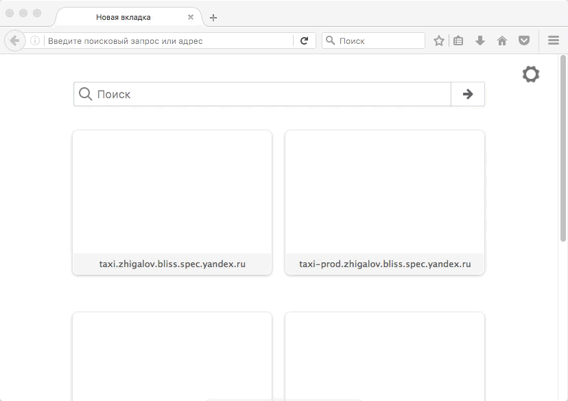

Автотесты
Selenium
Автотесты или ручное тестирование?

Ручное тестирование
- Интерфейс приложения часто меняется
- Быстро
- Эффективно в краткосрочной перспективе
Автотесты
- проводить чаще регрессионное тестирование
- отчет о состоянии продукта
- обнаружить ошибки, которые были пропущены на стадии ручного тестирования
Selenium
это инструмент для автоматизированного управления браузерами
Selenium
| Selenium IDE | |
| Selenium WebDriver | |
| Selenium Server + Selenium Grid |
Краткая история Selenium
В 2004 году, Джейсон Хаггис ... ядро было реализовано на JavaScript, многие вещи было невозможно осуществить из-за ограничений безопасности браузеров ... Selenium
Краткая история Selenium
В 2006 году, Саймон Стюарт ... инструмент для тестирования, который бы общался с браузером используя нативные методы операционной системы и браузера ... WebDriver
Краткая история Selenium
В 2008 году, слияние Selenium и WebDriver ... Selenium 2 (или Selenium Webdriver)
Поддерживаемые браузеры и платформы
- Google Chrome
- Microsoft Internet Explorer
- Microsoft Edge
- Mozilla Firefox
- Opera
- HtmlUnit
- PhantomJS
- Android (with Selendroid or appium)
- iOS (with ios-driver or appium)
Selenium IDE
(Integrated Development Environment, интегрированная среда разработки) — это инструмент, используемый для разработки тестовых сценариев.
Selenium IDE Установка

addons.mozilla.org
Selenium IDE Запуск

Selenium IDE Интерфейс

Selenium IDE Выполнение теста
Selenium IDE Сценарий теста
| lodash | ||
| open | /docs/4.17.4 | |
| sendKeys | css=input[type="search"] | filter |
| click | css=.react-menu-container li:not(.hidden)>a | |
| assertLocation | https://lodash.com/docs/4.17.4#filter | |
Selenium IDE Выполнение теста

Selenium IDE Выполнение теста

Selenium IDE Сценарий теста
| expert-hello-test | ||
| open | /adv/expert/exam/hello | |
| click | css=.checkbox__control | |
| clickAndWait | link=Начать тестирование | |
| click | css=.radiobox__control | |
| click | //button[@type='button'] | |
| waitForText | css=div.attempt-progress__text | 9% пройдено | ... |
| waitForText | link=Вернуться на главную Сертификации | Вернуться на главную Сертификации |